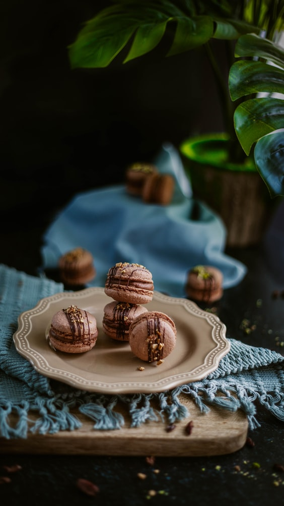
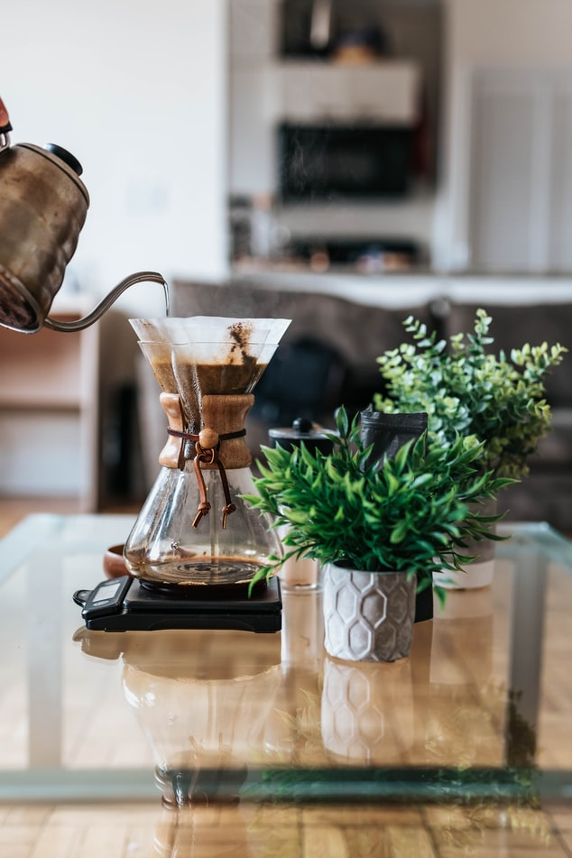
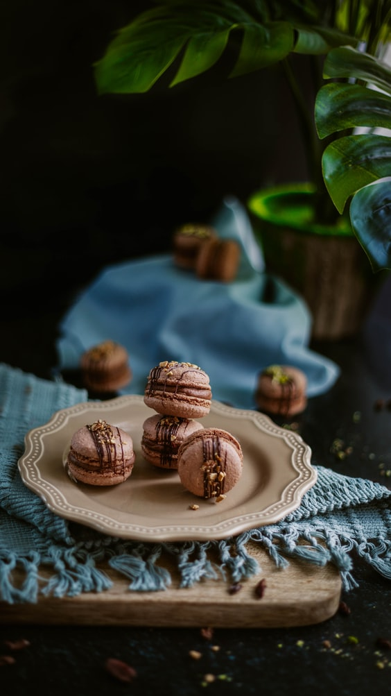
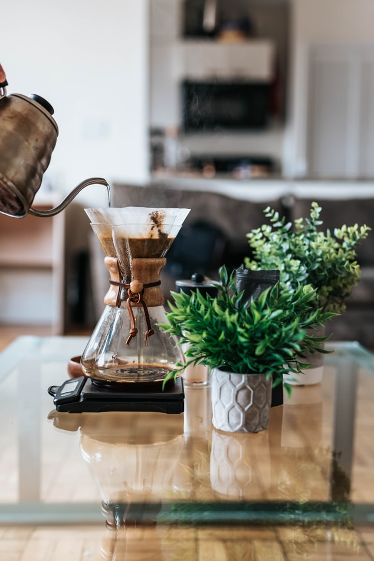

About Us
At Urban Coffee House, we only select current in season coffee crops. When in season, these coffee beans are at it's best. Most of our single origin coffees come from small farms with small harvests. Therefore, our coffee offerings change frequently and many of our coffees are not available year-round. Some very rare, seasonal micro lot coffee offerings are available at Urban Coffee House only for a limited time.
We roast all our coffees in-house at each coffeehouse location, enabling you to experience crisp roasted coffee at its peak of freshness, and thats when coffee should be enjoyed. This process is a splendor that is impossible for big coffee chains to achieve. When you taste a cup from Urban Coffee House, you are experiencing coffee that has been expertly roasted within a few days or even hours by the time it reaches your cup. Once you experience it, the taste of excellent top quality, locally craft roasted coffee is undeniable.
In addition to serving great coffee, we offer freshly baked pastries, authentic teas, scrumptious desserts and a variety of enticing items. So whether you come by and visit us during your quick morning rush or to just get away from it all, we invite you to any Urban Cofee House and look forward to serving you!
 


